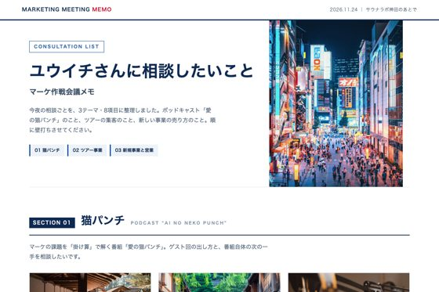
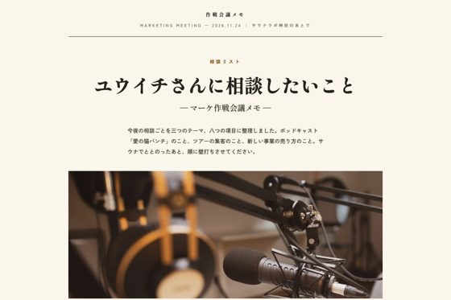
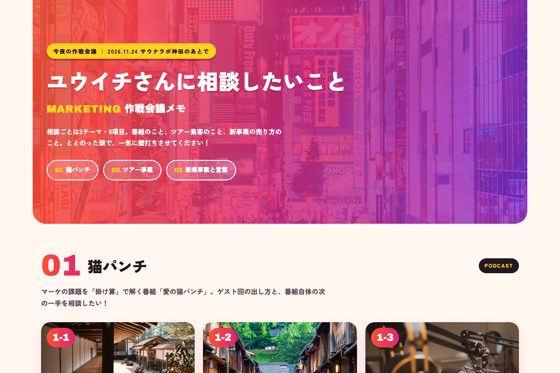
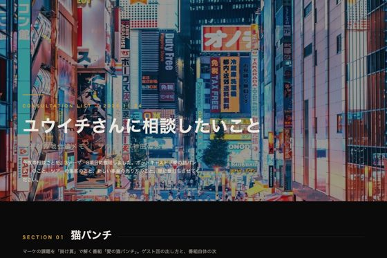
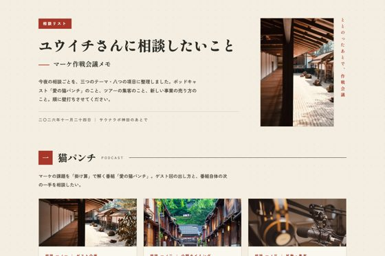

マーケ相談リストのページデザイン5案です。内容は全案共通（猫パンチ／ツアー事業／新規事業と営業の3セクション・8項目）。モチーフの違う5案から、番号で選んでください。

白基調＋ネイビーの整ったグリッド。マーケ会社のコーポレートサイトのような、信頼感と情報の見通しの良さが軸。
この案を開く
大きな明朝タイトルと余白で読ませる雑誌風。漢数字のセクション立てと罫線で、落ち着いた読み物に。
この案を開く
ビビッドなグラデーションに大きな数字とバッジ。勢いのあるスタートアップ風で、パッと目を引く案。
この案を開く
黒基調＋ゴールド1色。写真を大きく見せる格調寄りの案。夜の秋葉原の写真が主役。
この案を開く
生成り・墨・朱の和の色味。朱の判子風セクション番号と縦書きアクセントで、今夜のサウナ帰りの空気感に寄せた案。
この案を開く